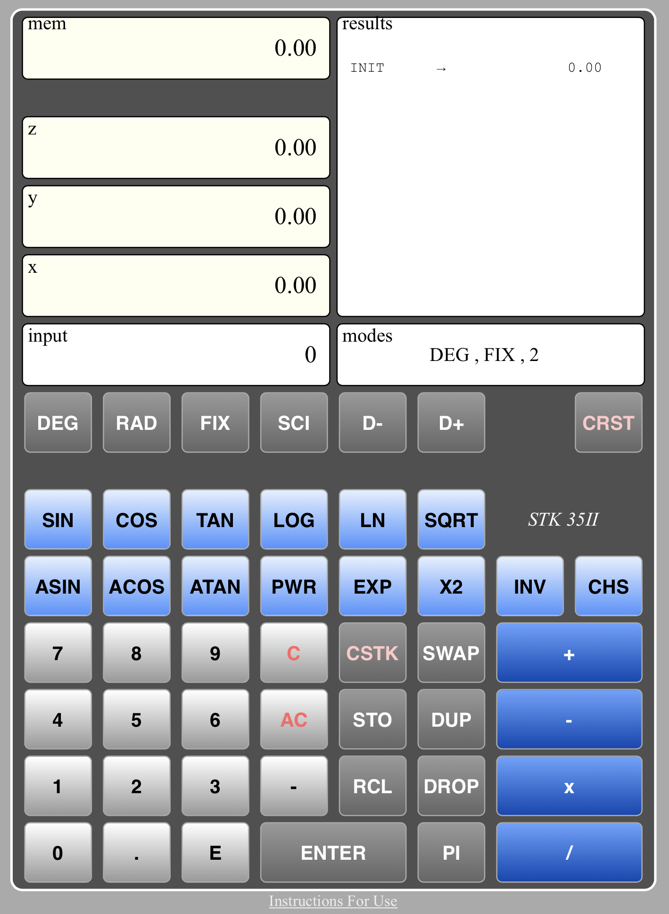
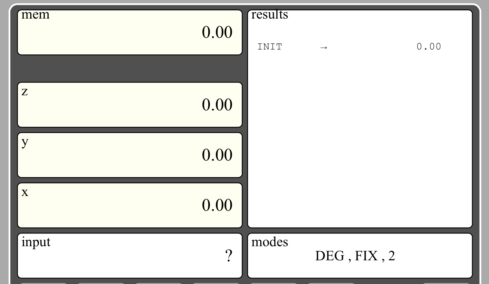
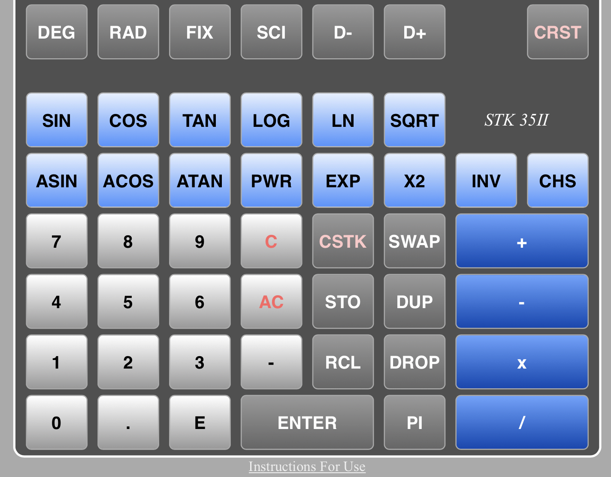

STK 35II an online RPN calculator
STK 35II

the calculator consist of :
- 7 displays screens
- 48 keys
- a link, below the "casing" to this instructions for use page.
It does mathematical calculations using the Reverse Polish Notation (RPN), which has been widely implemented in the Hewlett Packard calculators' starting in the 1970's.
This means that it uses a "calculation stack" (registers referenced as
x, y, z) to execute the operations.
Entering a number in the stack is done in two steps: using the number keys (the white ones) to set the number in the
input register then, with the
ENTER key, pushing this number to the first level of the calculation stack, that is to say the
x register.
Example: adding 4.5 to 3.8
- with the white keys, tap in 3 . 8which displays in the "input" register.
- tap the ENTER key. The content of the input register is moved to the x register (calculation stack)
- with the white keys again, tap in 4 . 5which displays in the input display.
- tap the ENTER key again. The value of the x register is moved up to the y register and the content of the input register is moved to the x register. We have now 3.8 in the y register and 5.5 in the x register
- tap the + key (a blue one). The y register is added to the x one which now displays the 8.3 value
Notice : if you tap directly the
+ key after entering the second value (skipping the second
ENTER key), the calculator will perform the entering step automatically. This will speed up the process.
The display area

There are 7 displays grouped in 4 main areas:
- the stack area includes the calculation registers named x, y, z and the memory register named mem
- the input area is used to enter a new number, using the "white keys" (see below key pad)
- the results area shows the last 15 operations done by the calculator
- The modes area shows by default the angle mesurement unit (radian / degrees) and the display mode (fixed or scientific, number of decimales). When needed it also shows a temporary warning message.
The keyboard area

There are 48 keys grouped in 3 main categories:
- the white keys, including the figures from 0 to 9, the decimal point, the minus sign... that is to says the ones used to enter a new number
- the grey keys which are related to stack and memory manipulations, display modes...
- the blue keys which are used to perform mathematical operations
The white keys
0 to 9 numbers
. decimal point
- minus sign, used to enter negative numbers or a negative exponent. Example : -123 or 456E-3. It should not be confused with the mathematical operation minus, which substact one number to an other one.
E exponent sign
C for clear. Remove the last entered sign from the input register
AC for all clear. Erase the input register
The grey keys
ENTER move the current value from the input register to the first level of the stack, x, and erase the input register
PI enter the mathematical Pi value into the x register
STO for store. The current x value is stored in the memory register.
Notice that, if a value is set in the input register, it will be moved to the x ones, then stored to the memory.
Storing a value in the memory doesn't erase it from the x register
RCL for recall. The stack is moved up and the current memory value is stored in the x register.
Notice: recalling a value from memory doesn't erase it from the memory register
DUP for duplicate the x register. y is moved to z, and y is set to x
DROP for dropping. The stack is moved down: x is set to y ,y is set to z. z is set to 0. Notice that the original x value is lost
SWAP for swap. The values of the x register and the y one are exchanged
CSTK for clear stack. All stack registers and the memory register are set to 0
DEG for degree. All trigonometric calculations will be done using the degree unit
RAD for radian. All trigonometric calculations will be done using the radian unit
D+ for decimal +. Increase the number of displayed decimals by one. Notice that the number of decimals is limited to 8
D- for decimal -. Decrease the number of displayed decimals by one. Notice that the minimum number of decimals is 0
FIX for fixed mode. Set the fixed mode where numbers are represented directly, without exponent.
Notice : some numbers, big ones, or with lot of displayed decimals, could be to large to be displayed (more than 16 characters). When this happen the calculator will automatically move to the scientific mode. A warning message will be displayed in the info display
SCI for scientific mode. Number are displayed with a mantissa and an exponent. Example: 123.45 is displayed as 1.23e+2
CRST for clear results. This will clear the results display. New display will start with the CRST command and the last x value
Notice : in order to speed up the data entry into the stack, if a number is set in the input register, when the STO key is tapped, the input register value will be moved to the x register, then copied to the mem register. The ENTER key is therefore optional in this case.
Example : 1 2 3 . 4 5 STO is equivalent to 1 2 3 . 4 5 ENTER STO
This is also the case for all the following mathematical operations keys, the blue keys.
Example : 3 4 . 2 + is equivalent to 3 4 . 2 ENTER +
The blue keys
+ for plus. x is replaced by x + y. y is replaced by z. z is set to 0
- for minus. x is replaced by y-x. y is replaced by z. z is set to 0.
x for multiplication. x is replaced by x * y. y is replaced by z. z is set to 0.
Notice: if the results exceed the maximum number accepted by the calculator, which is 9.99999999 e+99, a warning is set in the info display and the operation is not done
/ for division. x is replaced by y/x. y is replaced by z. z is set to 0.
Notice: if x is equal to 0, a warning is set in the info display and the operation is not done
INV for inverse function. x is replaced by 1/x
CHS for change sign. x is replaced by -x
SIN for sinus. x is replaced by sinus(x). If the DEG mode is set, x will be considered in degrees. If the RAD mode is set, x will be considered in radians
COS for cosinus. x is replaced by cosinus(x). If the DEG mode is set, x will be considered in degrees. If the RAD mode is set, x will be considered in radians
TAN for tangent. x is replaced by tangent(x). If the DEG mode is set, x will be considered in degrees. If the RAD mode is set, x will be considered in radians
Notice: if x is equal to +90 degrees or -90 degrees (+pi/2 or -pi/2 in radians) a warning is set in the info display and the operation is not done
ASIN for arcsinus. x is replaced by arcsinus(x). The result value will be in degrees if the DEG mode is set, in radians if the RAD mode is set.
Notice: if x > 1 or x < -1 a warning is set in the info display and the operation is not don.
ACOS for arccos. x is replaced by arccosinus(x). The result value will be in degrees if the DEG mode is set, in radians if the RAD mode is set.
Notice: if x > 1 or x < -1 a warning is set in the info display and the operation is not done.
ATAN for arctangent. x is replaced by arcsinus(x). The result value will be in degrees if the DEG mode is set, in radians if the RAD mode is set.
LOG for logarithm to base 10. x is replaced by logarithm(x) in base 10.
Notice: if x = 0 or x < 0, a warning is set in the info display and the operation is not done.
PWR for power. x is replaced by x power y. y is replaced by z. z is set to 0.
Notice: if the results exceed the maximum number accepted by the calculator, which is 9.99999999 e+99, a warning is set in the info display and the operation is not done
LN for neper logarithm. x is replaced by neper logarithm(x).
Notice: if x = 0 or x < 0, a warning is set in the info display and the operation is not done
EXP for exponential. x is replaced by e power x. y is replaced by z. z is set to 0.
Notice: if the results exceed the maximum number accepted by the calculator, which is 9.99999999 e+99, a warning is set in the info display and the operation is not done
SQRT for square root. x is replaced by square root(x).
Notice: if x < 0, a warning is set in the info display and the operation is not done
X2 for x square. x is replaced by square(x).
Notice: if the results exceed the maximum number accepted by the calculator, which is 9.99999999 e+99, a warning is set in the info display and the operation is not done
v2.0